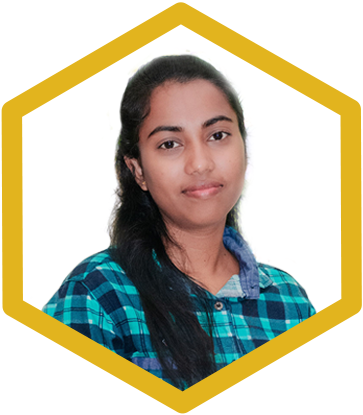

Welcome to my World
Hello,
I am Punsisi Chamoda
And I'm Web Developer
Bsc.(Hons) in Information Systems (UG)
PortfolioBsc.(Hons) in Information Systems (UG)
Portfolio

Fast learner who adapts quickly to change and eager to learn new methods and technologies. I excel in managing complex projects, leading cross-functional teams, and driving operational efficiency with strong communication skills. Currently, I serve as the Director of Operations at ZeroPlastic Sabaragamuwa Community, where I lead board meetings, manage projects, and ensure meticulous tracking. Additionally, I am an experienced graphic designer and content writer, actively involved in several volunteering communities. Outside academia, I am a dancer, artist, street drama performer, and karate practitioner. My school days were marked by academic excellence and active participation in the Green Troop, Prefect Board, Netball Team, and Debating Team. My skills encompass project management, teamwork, public relations, public speaking, and a strong work ethic.